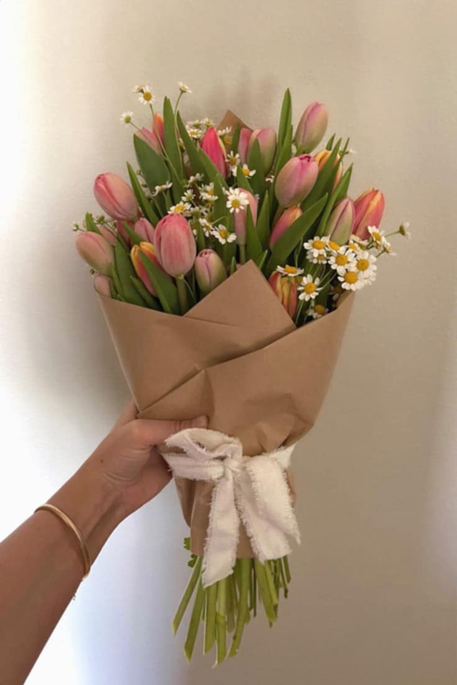

<html><head><title>Page4</title></head></html>
<body background="5378e30e44bf0622f4c4f57c3974327f.jpg"></body>
<br>
<center><h1>TULIPS</h1></center>
<br>
<center></center>
<br>
<center><p>Symbolizing renewal,<br> elegance, and vibrant beauty—Tulip represents a fresh perspective and refined simplicity.<br> Just like the flower’s graceful blooms,<br> we strive to deliver products and services that are both captivating and timeless.<br> With a focus on quality and sophistication,<br> Tulip brings a touch of charm and inspiration to every experience.</p></center>
<br>
<h1><div align="right">&#8369 355</div></h1>
<h1><div align="right"><a href="Page5(3).html" align="right"><button>Checkout</button></a></div></h1>
<a href="Page3(3).html"></a>
  <a href=""></a>